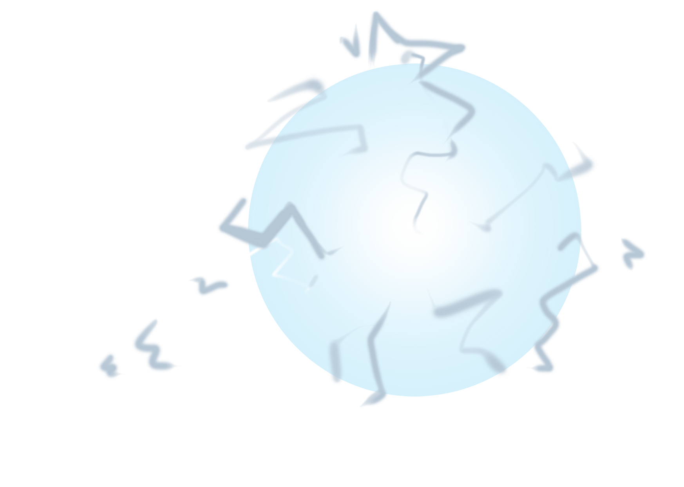
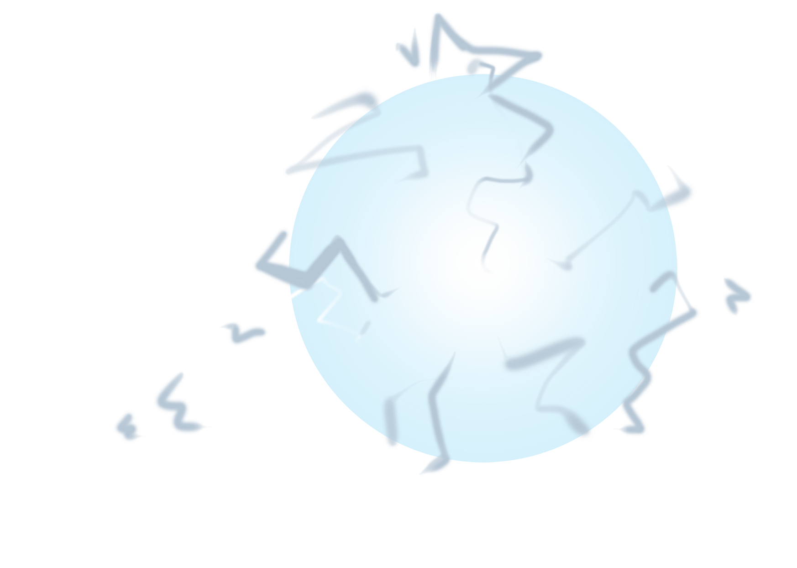

Bubbles Shield System¶
Shields will be generated if 5 bubbles have collected as mentioned previously:
     |
{kind=link}
Spawned by the following functions:
// spawning bubbles
void spawnBubble() {
// instantiate the next spawn
GameObject newSpawnBubble;
// random 1/2 possibility spawning at one of the two plausible heights
Random random = new Random();
int randomThreshold = random.Next(1, 3); // generate a integer number between 1, 2
// run this spawn function every certain frames (defined in inspector)
if (Time.frameCount % frameIntervalDownOb == 0) {
if (randomThreshold == 1) {
newSpawnBubble = Instantiate(bubble, spawnPosBubble, Quaternion.identity);
addChildToCurrentObject(newSpawnBubble);
} else if (randomThreshold == 2) {
newSpawnBubble = Instantiate(
bubble,
new Vector3(
spawnPosBubble.x,
spawnPosBubble.y - 4,
spawnPosBubble.z),
Quaternion.identity);
addChildToCurrentObject(newSpawnBubble);
}
}
}
Note
bubble shields
Attention
To make the game playable, the minimal inetrval between obstacles are equal to half of character’s jump distance (12/2). Any obstacles generated within that distance will be deleted from the list.